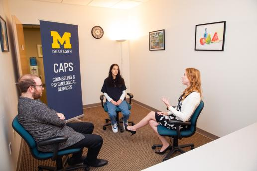
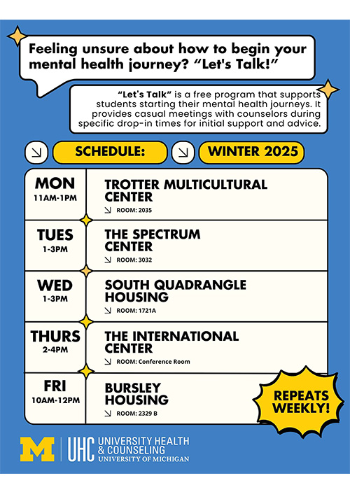
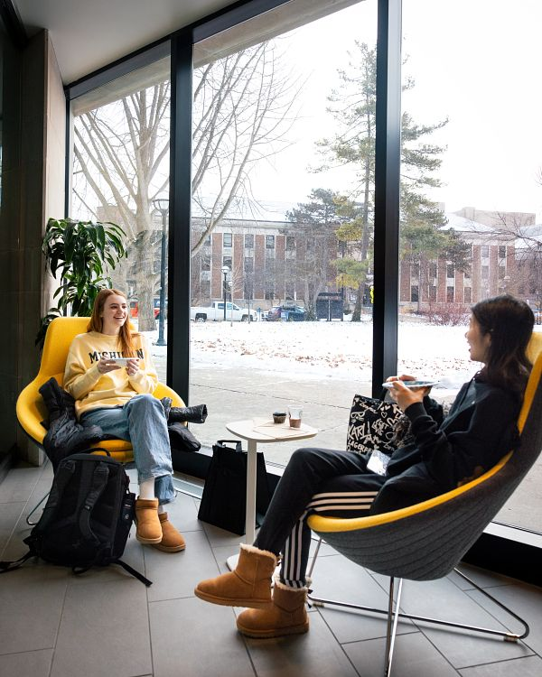

Welcome to Counseling and Psychological Services (CAPS)

University Health & Counseling (UHC) supports the health and well-being of the campus community. We are inspired to help students realize their potential, cope with the stresses of life, work productively, and connect meaningfully with others.
UHC is made up of Counseling and Psychological Services (CAPS), which offers counseling services, and University Health Service (UHS), which offers medical services. This website is about CAPS. For information about UHS, please visit the UHS website.
CAPS is committed to creating an environment based on our values of multicultural, multi-disciplinary, and multi-theoretical practices that allow our diverse student body to access care, receive high-quality services, and take positive pathways to mental health. We are happy to offer both in-person and virtual services.
Our Front Desk (Michigan Union 4th Floor) is open and ready to help support you. Staff members are available throughout the day to assist you with your needs, answer questions, and get you to the right place. We can be reached by phone at: (734) 764-8312.
CAPS has a limited number of private spaces available for students to connect with their counselor via telecounseling. Please contact the front desk for more information on those private spaces.
Please Note: During high-demand periods, CAPS will be unable to accommodate class-related interviews and/or projects. Many students are able to find the information they need within our website and our annual reports.
The CAPS office is unable to participate in scavenger hunts for students due to maintaining the confidentiality of our clients. However, you are welcome to direct students to the wellness zone, which has a separate entrance adjacent to CAPS. If you have any questions, please feel free to contact us.
Hours:
Monday - Thursday: 8am - 6pm
Friday: 8am - 5pm
Saturday & Sunday: Closed
Let's Talk
“Let's Talk” is a free program that supports students starting their mental health journeys. It provides casual meetings with counselors during specific drop-in times for initial support and advice.

Established in 1964, the Center for the Education of Women+ was a pioneering university women’s center. Designed to serve the needs of women students as well as women returning to school or work, CEW+ (then known as the Center for the Continuing Education of Women) was founded with a three-part mission of service, advocacy, and research. The Center for the Education of Women+ (now known as CEW+) continues its work today, serving University students, staff and faculty, community members, and all genders, facing education, employment, or other life issues.
Individual Peer Counseling

Individual Peer Counseling (IPC) is designed to offer a new way to meet the needs of students across the University of Michigan. We are here to support student mental health and offer students a place to vent.